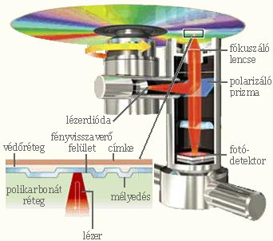

A mágneses elvű adathordozókon kívül egyre elterjedtebbek az optikai elven működő adathordozók. Archivált dokumentumok, képek, módosítást nem igénylő programok tárolására ideális adathordozó a CD (Compact Disk), amelyet 1980-ban a Sony és a Philips cég közös fejlesztés után dobott piacra.
Az optikai információtárolás elve hasonlít a lemezjátszó elvéhez, azzal a különbséggel, hogy itt tű helyett fénnyel - speciálisan lézerfénnyel - olvasunk a lemezekről. Alapértelmezésben egy kicsi, fényes lemezről (CD-ről) olvas be adatokat. Fizikai alapja, hogy a CD egyik oldalán különböző mélységű bevágások vannak körben. A lemez nagy sebességgel forog, és egy vékony lézersugár olvassa le ezeket a bemélyedéseket, így értelmezi az adatokat. A szabványos CD 120 mm átmérőjű és 1,2 mm vastag. Forgási sebessége 150 KByte/sec. Ez volt az Audió CD és az egyszeres Korong formájú adathordozó, ami alapvetően csak olvasható, amelyeknek jelölésük a csomagoláson: CD-R, de már vannak olyan CD-lemezek, amelyek egyszer: CD-W, (esetleg többször írhatók: CD-RW.) Ehhez képest ma már csak elvétve lehet negyvennégyszeresnél alacsonyabb sebességűt kapni. A kompakt lemeznek több változata is ismert. A leggyakoribbak a következők: Zenei CD (Music CD): 74 percnyi zenét tartalmazhat kiváló minőségben, természetesen sztereó módon lejátszhatóan. A kereskedelemben csak lejátszható Audió CD-k kaphatók. A lemezt nem lehet felülírni, és körülbelül tízezer lejátszás, vagy kb. tízévnyi használat után jelentkezik egy kissé érezhető minőségromlás. Megfelelően becsomagolva nem sérül, és a mágneses elvű tárolókkal (hajlékony és merevlemez meghajtók) szemben nem érzékeny a mágneses tér erős változásaira.
Ez igen jó technika, nagy hátránya viszont, hogy nincsen egységes világszabvány. A világot a vezető gyártók felosztották hat részre, és így minden egyes területen, külön-külön kell megépíteni a gépeket és a meghajtókat. Ha elkészül a szabvány, akkor elképzelhető, hogy az analóg technológiát teljesen kiváltja a digitális technológia. Ehhez becslések szerint tíz évre van még szükség. Egy új multimédia számítógépnek már elengedhetetlen tartozéka a DVD-ROM meghajtó. Ez a viszonylag új eszköz a hagyományos CD-ROM meghajtók modernizált reinkarnációja. A különbség megdöbbentő: méretben azonos médiára (12 cm átmérőjű, ezüstösen csillogó polikarbonát lemez) akár tizennégyszeres mennyiségű adatot lehet rögzíteni. Ennek első látásra nem sok értelme van, hiszen úgy tűnik, hogy a CD 650 Megabyte kapacitása is bőven elég, de a DVD-lemeznek jelenleg nem az adattárolás az elsődleges felhasználási területe. A DVD célja: a mozifilm. Egy teljes film ráfér egyetlen lemezre, két-háromnyelvű szinkronnal, akár nyolcnyelvű feliratozással, szinte tökéletes hang és képminőség mellett. Persze a DVD-meghajtók nem most jelentek meg (kb. két éve vannak piacon), most azonban hirtelen megélénkült a kereslet irántuk: megjelentek a magyar feliratos filmek is, és a jelenleg átlagosnak vehető új számítógépek képesek minden kiegészítő hardver használata nélkül is lejátszani ezeket a filmeket. A DVD-lemezeken a filmeket MPEG4-es eljárással tömörítve tárolják. (Összehasonlításként: az előd Video-CD MPEG1-es tömörítést használ.) Ez egy rendkívül komplex és bonyolult algoritmus, amelynek a dekódolásához néhány évvel ezelőtt még célhardver volt szükséges. A jelenlegi processzorok azonban könnyedén megbirkóznak vele. Itt jöttek a képbe az ún. Soft DVD-k és a DIVx lejátszók. Ezek olyan programok, amelyek képesek dekódolni az MPEG4-es tömörítésű filmet, pusztán a processzor számítási teljesítményét használva. Emellett van még egy óriási előnyük: egyes programok képesek a régiókódolástól függetlenül lejátszani a filmeket. Egy kis magyarázat: a DVD filmek kiadási helytől függően kapnak egy kódot, ezt nevezik régiókódnak. A világ fel van osztva hat területre, így a régiókódok 1-tol 6-ig tartanak. Hazánkban vagy észak-amerikai (1-es kód) vagy pedig európai (2-es kód) filmeket lehet kapni. A DVD-ROM tárolókapacitása 4,7 Gbyte, ha egyrétegű, és 8,5 GByte, ha kétrétegű technológiát alkalmaznak. Amennyiben kétoldalas a DVD, akkor maximálisan 17 Gbyte adatot képes tárolni. Minden lemezes egység pörgeti a lemezt, amikor működik. Pörgés közben a hajlékony lemezek is merevvé válnak.